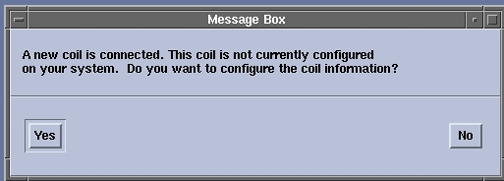
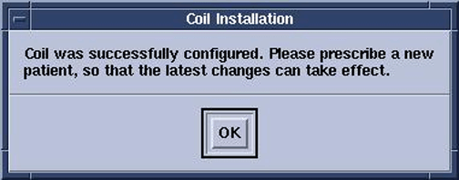
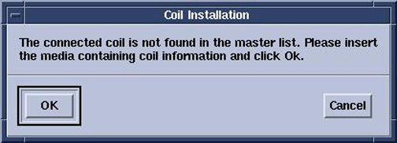

Operating Documentation
Direction 5670006, Rev# 1
Discovery MR750w GEM Service Methods
Module Version 3.0, Version Date 5/19/09
Operating Documentation |
| Required Persons | Preliminary Reqs | Procedure | Finalization |
|---|---|---|---|
| 1 | Not Applicable | 5 minutes | Not Applicable |
| Item | Qty | Effectivity | Part# | Manufacturer | |
|---|---|---|---|---|---|
| Any new coil that has not yet been configured for a system. | N/A | - | - | - | |
Plug the coil into appropriate A- and/or P-Ports. The system automatically detects the new coil and a dialog box describes that the coil has not yet been configured for the system.
Illustration 1: New Coil Detected Dialog Box

Click [Yes] to configure the new coil. A confirmation dialog box appears indicating that the coil was successfully configured.
Illustration 2: Configuration Successful Dialog Box

Click the OK button and prescribe a new patient for changes to take effect.
If the required information was not found on the system, and the coil could not be configured, a dialog box advises you to take a suggested course of action.
Illustration 3: Configuration Not Successful Dialog Box

| NOTE: | Insert the CD, which contains the coil configuration data, and then click the [OK] button. |
If the system is unable to configure the coil and no media is available that contains the coil data, click the [Cancel] button.
No finalization steps.